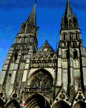

Architecture is mostly about building places for us to live and work.
Because manufacturing is very good at producing (approximately) Euclidean shapes - bricks, boards, girders - it is no surprise that buildings have Euclidean aspects.
On the other hand, some architectural styles are informed by Nature, and much of Nature is manifestly fractal.
So perhaps we should not be so surprised to find fractal architecture.
As we shall see, fractals appear in architecture for reasons other than mimicking patterns in Nature.
To emphasize that fractal architecture arose naturally in different cultures, we divide our examples into three categories.
|  | |
|
| African architecture | European architecture | Indian architecture |